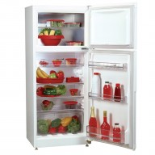
PATRICK
HELADERA NO FROST PATRICK HPK310
art. 12403
Capacidad: 252 litros. Sistema No Frost. Estantes de cristal templado en refrigerador con borde antiderrame y estante de rejilla en freezer. Anaqueles superprofundos. Estantes en el freezer. Crisper de frutas y verduras. Patas niveladoras regulables.
Precio online $3.934
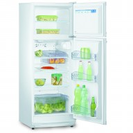
PATRICK
HELADERA NO FROST PATRICK HPK310 MET
art. 13304
Capacidad: 252 litros. Sistema No Frost. Estantes de cristal templado en refrigerador con borde antiderrame y estante de rejilla en freezer. Anaqueles superprofundos. Estantes en el freezer. Crisper de frutas y verduras.
Precio online $4.174
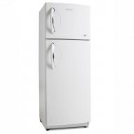
ELECTROLUX
HELADERA NO FROST ELECTROLUX DF-34
art. 13451
Heladera No Frost DF34. Características: Compartimiento Fast freezing: acelera el congelamiento de los alimentos. Huevera removible: con capacidad para 12 unidades. Estantes de vidrio templado removibles: 3 estantes internos super resistentes.
Precio online $4.764
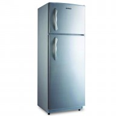
WHITE WESTINGHOUSE
HELADERA 2 FRIOS WHITE WESTINGHOUSE WW-226
art. 14054
Capacidad 239 Lt - Ciclica. Estantes Rejilla de Alta Resistencia. Estante Inferior Antiderrame. Descongelamiento Automático
Precio online $2.799
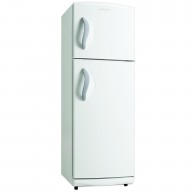
GAFA
HELADERA 2 FRIOS GAFA HGF-340A
art. 16444
Capacidad: 284 litros brutos. Freezer Aluminizado. Heladera con freezer. Descongelamiento automático en la parte inferior. Clasificación Energética A. Contrapuerta de refrigerador con balcones transparentes. Estantes de rejilla de alta resist
Precio online $2.879
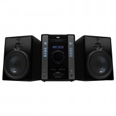
NOBLEX
MINICOMPONENTE NOBLEX MNX-225
art. 22397
Potencia total: 2500 W PMPO. Reproduce: MP3, WMA, CD, CD-R / RW. Puerto USB para conexión de MP3 players. Funcion MP3 CREATOR
AUX-IN. Bandeja para 1 CD
Precio online $1.199
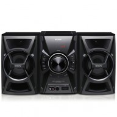
SONY
MINICOMPONENTE SONY MHC-EC599
art. 20733
Siente la potencia sin límites con la nueva línea de audio Sony. El nuevo MHC-EC599 de 1300W de potencia y con función de grabación y reproducción de MP3 por USB te permite reproducir tus canciones favoritas con la increíble calidad de sonido Sony.
Precio online $1.499
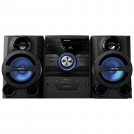
PHILIPS
MINICOMPONENTE PHILIPS FWM211X/77
art. 44959
Enriquecé tu experiencia de sonido con el MINICOMPONENTE PHILIPS FWM211X/77. MAX Sound para reforzar la potencia al instante. Control digital de sonido que optimiza todos los estilos de música. Potencia de salida total: 2200 W PMPO
Precio online $1.499
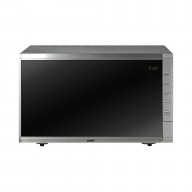
SANYO
MICROONDAS SANYO EMGX2908
art. 54654
Capacidad: 29 litros. 900 W en función microondas. 1100 W en función grill. Función convección, con 2500 W de potencia. 9 programas de cocción preestablecidos. 5 niveles de potencia. Programación de sus platos preferidos. Descongelado
Precio online $1.629
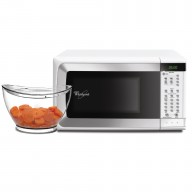
WHIRLPOOL
MICROONDAS WHIRLPOOL WMP2OY
art. 55036
Capacidad 20 L. Potencia 800 Watt. Comando Digital. Timer - Pantalla LED. Función Memoria. Traba para Niños
Precio online $1.279
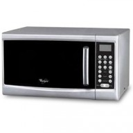
WHIRLPOOL
MICROONDAS WHIRLPOOL WMD25GS
art. 55038
MICROONDAS WHIRLPOOL WMD25GS. Capacidad: 25 Lt - Panel Digital. 5 Niveles de Cocción. Descongelamiento Rápido, por Peso o Tipo de Alimento. Funciones: Combinación y Grill
Precio online $1.247
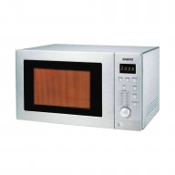
SANYO
MICROONDAS SANYO EMGX2610
art. 55042
MICROONDAS SANYO EMGX2610. Capacidad 26 Lts. Panel Digital. Potencia: 900 W. 5 Niveles de Potencia. Descongelamiento Automático
Precio online $1.199
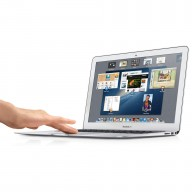
APPLE
NOTEBOOK APPLE MACBOOK AIR (MD223LE-A)
art. 40954
La MacBook Air es aun más rápida de lo que parece, con el procesador Intel Core i5 tendras toda la potencia que necesitas y más. Posee una pantalla ancha brillante retroiluminada por LED de 11.6 pulgadas (diagonal) con soporte para millones de colores
Precio online $9.999
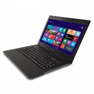
POSITIVO-BGH
NOTEBOOK POSITIVO-BGH C-560
art. 41997
Tener lo ultimo tambien es simple. Notebook POSITIVO-BGH C-560, que cuenta con un poderoso procesador Intel Core i5 de tercera generación, un disco de 500 GB y 6 GB de memoria RAM para que tengas todo lo que necesitas para completar una jornada laboral.
Precio online $5.499
TOSHIBA
NOTEBOOK TOSHIBA SATELLITE L745-SP4203SA
art. 43007
Todo lo que necesitas, cuándo y dónde quieras. Pone tu vida en marcha. Mantente en contacto cuándo y dónde quieras. Ponte al corriente en tu trabajo. Estudia y socializa. Juga o disfruta de una película lejos de tu casa.
Precio online $5.499